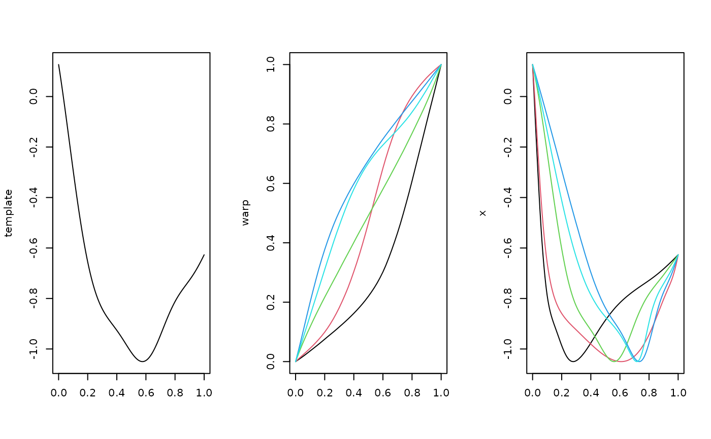
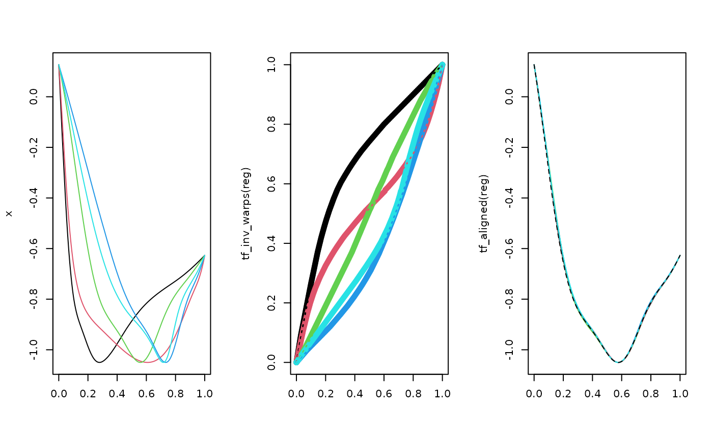

These functions stretch and/or compress regions of the domain of functional data:
tf_warp()applies warping functions to aligned (registered) functional data to recover the original unregistered curves: \(x(s) \to x(h(s)) = x(t)\).tf_align()applies the inverse warping function to unregistered data to obtain aligned (registered) functions: \(x(t) \to x(h^{-1}(t)) = x(s)\).
Usage
tf_warp(x, warp, ...)
# S3 method for class 'tfd'
tf_warp(x, warp, ..., keep_new_arg = FALSE)
# S3 method for class 'tfb'
tf_warp(x, warp, ...)Arguments
- x
tfvector of functions. Fortf_warp(), these should be registered/aligned functions and unaligned functions fortf_align().- warp
tfvector of warping functions used for transformation. See Details.- ...
additional arguments passed to
tfd().- keep_new_arg
keep new
argvalues after (un)warping or returntfdvector onargvalues of the input (defaultFALSEis the latter)? See Details.
Value
tf_warp(): the warpedtfvector (un-registered functions)tf_align(): the alignedtfvector (registered functions)
Details
These functions will work best with functions evaluated on suitably dense and regular grids.
Warping functions \(h(s) = t\) are strictly monotone increasing (no time travel backwards or infinite time dilation) with identical domain and co-domain: \(h:T \to T\). Their input is the aligned "system" time \(s\), their output is the unaligned "observed" time \(t\).
By default (keep_new_arg = FALSE), the tfd methods will return function objects
re-evaluated on the same grids as the original inputs,
which will typically incur some additional interpolation error because (un)warping
changes the underlying grids, which are then changed back. Set to TRUE to avoid.
This option is not available for tfb-objects.
See also
Other registration functions:
tf_align(),
tf_estimate_warps(),
tf_landmarks_extrema(),
tf_register(),
tf_registration
Examples
# generate "template" function shape on [0, 1]:
set.seed(1351)
template <- tf_rgp(1, arg = 201L, nugget = 0)
# generate random warping functions (strictly monotone inc., [0, 1] -> [0, 1]):
warp <- {
tmp <- tf_rgp(5)
tmp <- exp(tmp - mean(tmp)) # centered at identity warping
tf_integrate(tmp, definite = FALSE) / tf_integrate(tmp)
}
x <- tf_warp(rep(1, 5) * template, warp)
layout(t(1:3))
plot(template); plot(warp, col = 1:5); plot(x, col = 1:5)

# register the functions:
if (requireNamespace("fdasrvf", quietly = TRUE)) {
reg <- tf_register(x)
} else {
reg <- tf_register(x, method = "affine", type = "shift_scale")
}
layout(t(1:3))
plot(x, col = 1:5)
plot(tf_inv_warps(reg), col = 1:5); lines(tf_invert(warp), lty = 3, lwd = 1.5, col = 1:5)
plot(tf_aligned(reg), col = 1:5, points = FALSE); lines(template, lty = 2)
